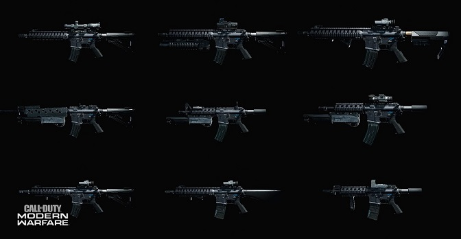
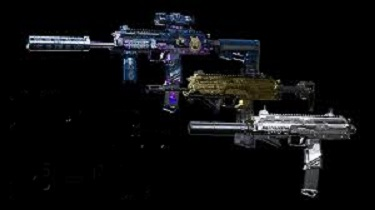
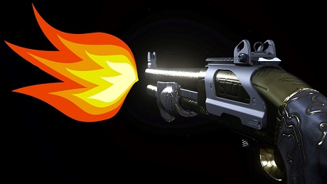
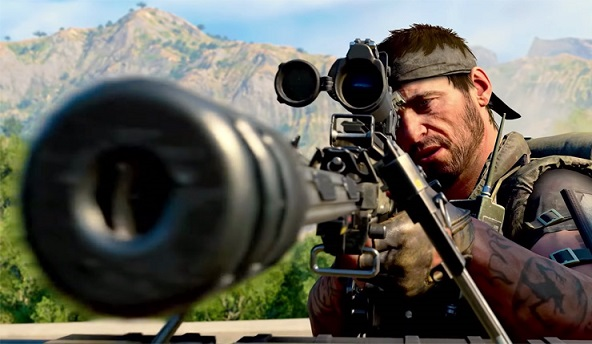

Bem-Vindo!
Esta página tem o intuito de você que está começando a jogar Call of Duty® Modern Warfare Warzone
a mostrar sobre algumas das melhores armas do jogo e dicas sobre qual arma escolher em sua guerra!
Caso você queira baixar o jogo, o link está aqui download do game.
Abaixo segue uma explicação sobre cada uma das classes existentes no jogo, cada classe será
adequar a cada estilo de jogo, e então você ira ter que escolher uma que mais define você no jogo.
Fuzis de Assalto
Os fuzis de assalto são os famosos pau para toda obra, fazem o trabalho para curta e para longa
distâncias, mas é nas distâncias médias que eles melhor se adaptam e tem o melhor dano.
Os critérios colocados aqui para os melhores fuzis, são os seu controle de recuo para atirar, e o
TTK delas, TTK para quem não sabe, significa Time to Kill traduzindo-o pro português o tempo
para matar, é o tempo que você leva para atirar até o seu oponente estiver abatido.
Abaixo segue a lista da minha opinião de quais são as melhores armas para essa classe:
Comparação de dano entre os fuzis de assalto
Arma |
Dano de 0 a 50 metros |
Dano de 50 a 100 metros |
|---|---|---|
| CR-56 Amax | 42 (0-34 m), 38 | 38 (50-53 m), 33 (53 - 64 m), 28 |
| Kilo 141 | 28 | 23 (50-84 m), 18 |
| M13 | 24 | 24 (50-53 m), 19 |
| RAM-7 | 28 (0 - 41 m), 23 | 23 (50 - 70 m), 18 |
Submetralhadoras
As submetralhadoras são para os rushadores de plantão, são ótimas para combates de curta distância
e com a mobilidade perfeita para poder correr o mapa inteiro que nem um maluco atrás das kills,uma observação,
a AS VAL é da classe fuzis de assalto mas se você jogar com ela vai entender porque coloquei ela aqui
nas submetralhadoras ao invés dos fuzis de assalto.
A seguir tem as submetralhadoras que são as melhores no jogo:
Comparação de dano entre as submetralhadoras
Arma |
Dano de 0 a 32 metros |
Dano de 32 a 100 metros |
|---|---|---|
| AS VAL | 32 | 28 |
| MP 5 | 34 (0-10 m), 25 (10-19 m), 22 (19-28 m), 19 | 19 |
Escopetas
As escopetas meus amigos nesse jogo são as armas que eu menos curto, não porque elas são ruins,
bem pelo contrário, elas são uma maldição nesse jogo ótimas armas, para mim nesse momento
são as mais apelonas do jogo, tem um dano absurdo de curta distância, com um ou dois tiros
você consegue matar facilmente o seu inimigo.
Se você quer fazer os outros passar raiva no Warzone segue as escopetas mais apelonas do jogo:
Eu lhe peço por favor não aperta nesse dois links abaixo
Comparação de dano entre as escopetas
Arma |
Dano de 0 a 11 metros |
Dano de 11 a 29 metros |
|---|---|---|
| VLK Rogue | 300 (0-6 m), 140 (6-9 m), 72 | 72 |
| Escopeta R9-0 | 166 (0-2 m), 107 (2-4 m), 96 | 54 (20 m distância máxima) |
Metralhadoras Leves
![A imagem mostra três PKM's num fundo preto, a primeira
tem uma skin de damasco que consiste nas cores roxa, azul fraco e uns detalhes em laranga em toda a arma, ela está equipada também
com um bipé, a segunda PKM está com uma skin camuflada com as cores marrom e preta, e está sendo equipada uma mira VLK 3,0x nela,
a terceira e última PKM é toda dourada e está com uma lente holográfica junto com ela. Um pouco ao lado esquerdo da última PKM está escrito Warzone e embaixo de Warzone está escrito PKM](img/armas/metralhadora-leve/metralhadoras-leve.png "Metralhadoras Leves")
As metralhadras leves nesse jogo não estão no topo das melhores armas, isto porque o Warzone é muito
dinâmico, e então não da espaço para armas muito pesadas, mas tem uma em específica que é muito boa
de se jogar, e eu deixo aqui logo abaixo para você conferir:
Snipers
E deixamos o melhor por último, para mim essa é a classe que eu mais gosto de jogar, mas não é
para você ficar camperando com essas snipers abaixo, elas são feitas para você rushar é importante
frisar isso, elas são boas para situações de curtas, médias, longas e para qualquer distância nesse
jogo.
Você duvida? Aperta aqui e veja se o que estou dizendo é mentira, abaixo segue as melhores armas do jogo:
Comparação de dano das snipers
Arma |
Dano de 0 a 78 metros |
Dano de 78 a 100 metros |
|---|---|---|
| AX-50 | 112 | 112 |
| HDR | 112 | 112 |
| Kar 98k | 154 | 90 |